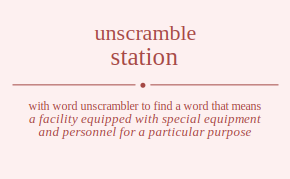

The word found after unscrambling station means that a facility equipped with special equipment and personnel for a particular purpose, proper or designated social situation, (nautical) the location to which a ship or fleet is assigned for duty, the position where someone (as a guard or sentry) stands or is assigned to stand, the frequency assigned to a broadcasting station, assign to a station, .
